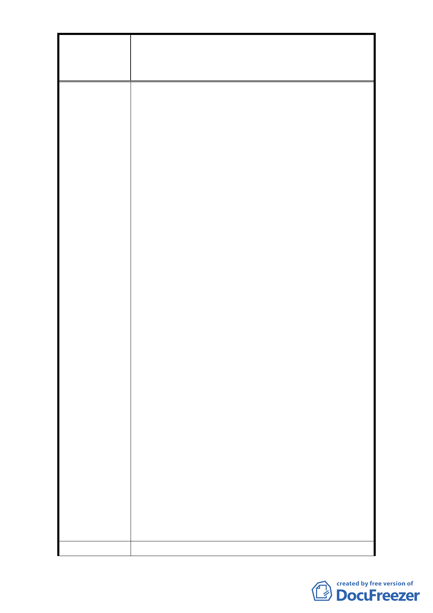

修訂臺北市大安區青田街保存區聚落風貌保存專用區細部計
案
名
畫、變更部分第三種住宅區、第三種商業區(特)為第三種住宅區
(特)(日式宿舍)及第三種商業區(特)(日式宿舍)暨劃定週邊地
區都市設計管制細部計畫案
經過長達一年等待，台北市都市計畫委員會，終於於
民國 101 年 10 月 29 日下午 2：00 召聞【台北市大安
區青田街保存區聚落風貌保存專用區細部計畫、變更
部分第三種住宅區、第三種商業區（特）為第三種住
宅區（特）（日式宿合）及第三種商業區（特）（日式
宿合）暨劃定週邊地區都市設計管制細部計畫案】第
二次專案小組會議，但會議結束後，結果是，令人大
失所望，完全沒有配套措施顧及毗鄰古蹟、歷史建築
及日式宿合的左鄰右合，讓大家只有遭受其害而未蒙
其利，尤其我們台北市金華段二小段 267 地號地形完
全遭受破壞，267 地號基地幾乎有四面臨歷史建某及
日式宿含，前院還要退縮 4.5 米，同時又有前復建築
消線問題，四周退縮復的剩餘的整個基地只剩下約 20
坪可做建築面積【原 267 地號基地有 70.18 坪】，原住
三建蔽率為 60 %，如今建蔽率只剩 28 %，請問要如何
設計？損失的容積與建蔽率該如何處理？敬請各位委
員幫忙協助。
台北市金華段二小段 267 地號上的 4 樓老公寓建築物
皆已高達 35 年以上，加上有多位 70~90 歲老人家居
住於此，急需改建，我們也希望能和左鄰右會一起進
行都更，而非被棄於不顧。
希望我們能有和台北市民一樣的權益，能享受 4 ~5 樓
老舊公寓都更的權利（目前興富發建設在南港的工地
已被政府核准 4~5 樓老舊公寓都更室內 1 坪換 1 坪的
案例），根據憲法第 15 條人民的財產政府應與保障，
所以請求委員們能保障我們應有的權益。讓我們不要
損失容積，以便日後改建，應放寬我們建築物的高度
限制，或應解除 268 地號只有地坪 50 坪左右的破舊
日式宿舍限建，讓 268 地號參與我們與台北市金華段
二小段 269、270 地號都更改建，如此可解除青田街細
部計畫限建的配套措施不完整所造成我們 267 地號地
形的畸零或都更合併後的畸形基地（大致上成為一隻
動物有兩隻腳形狀的奇怪地形），敬請協助及保障我們
應有的權益及讓我們有和所有台北市民一樣的公平居
住權益。(附圖)
建議辦法
- 41 -